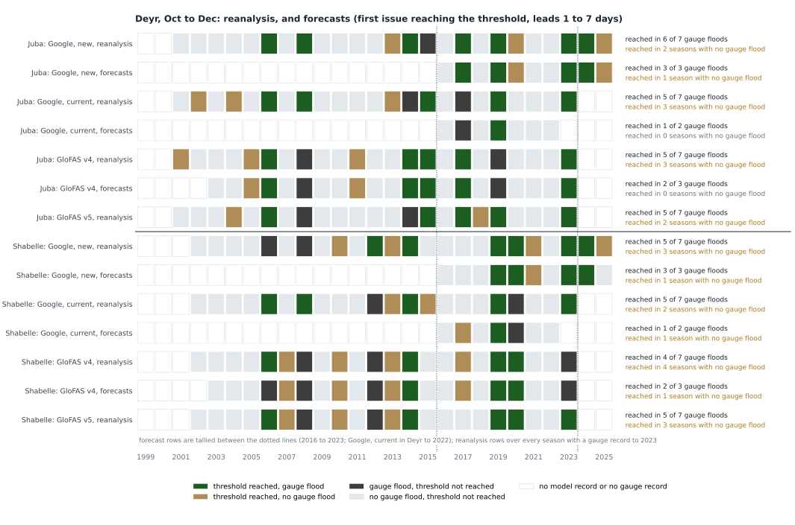
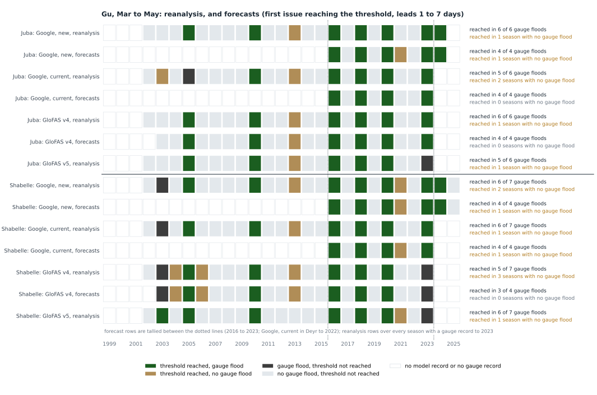
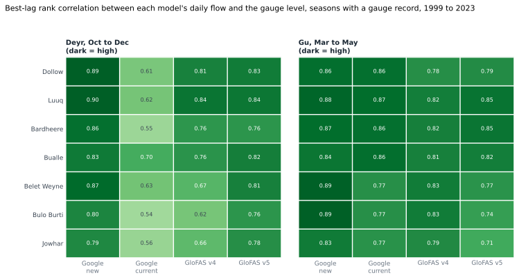
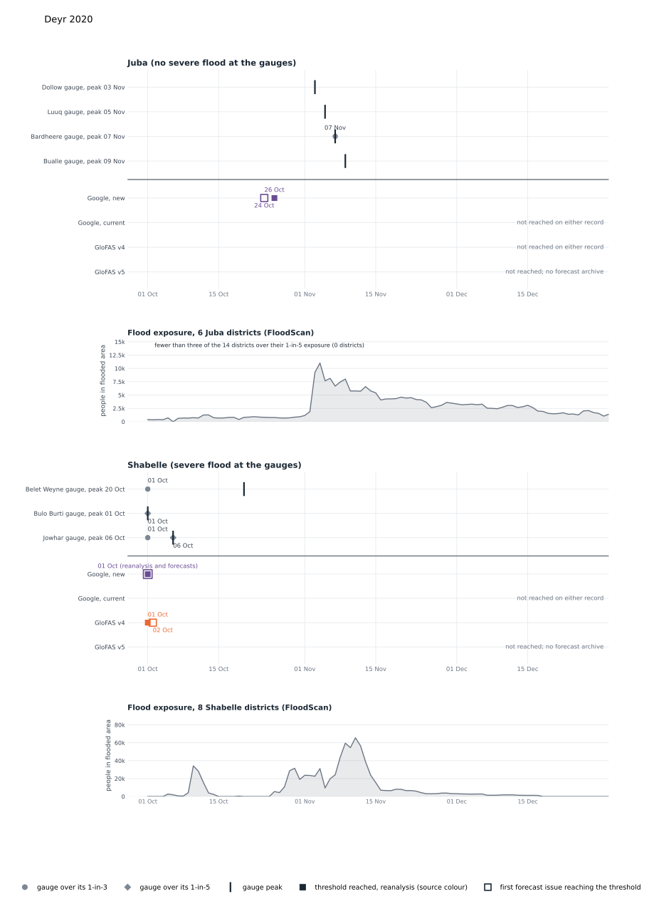

Sources: Google, new (the November 2026 model); Google, current (Google's published 2024 model, not verified as the live Flood Hub model); GloFAS v4 (the source the Deyr trigger runs on today); GloFAS v5 (the model the Deyr thresholds were designed on). Records: reanalysis, the model's own record of the past; forecasts, the first issue dated in the season that reaches the threshold at any lead from 1 to 7 days. The live trigger reads forecasts this way. Archives: GloFAS v4 2003 to 2023, Google, current 2016 to June 2023, Google, new 2016 to 2025, GloFAS v5 none.
Threshold rule: three of the four Juba stations, or two of the three Shabelle stations, over their own 1-in-3 level on the same day. Each model's levels are fitted on its own 1999 to 2023 seasonal maxima, with the same return period at every station and in both seasons. Scores: seasons with a gauge record, 2001 to 2023 for Juba Deyr; 2002 to 2023 for Shabelle Deyr, Juba Gu, Shabelle Gu, on the reanalysis; 2016 to 2023 on the forecasts (Google, current in Deyr: 2016 to 2022).
Gauge benchmark: a gauge flood is two SWALIM gauges on the same river over their own 1-in-3 level, fitted on 2000 to 2023. A threshold reached in a season with no gauge flood is a false alarm. The ranking of seasons and the timing use the day the second gauge crossed. Gauge data run to July 2026.
1A 1-in-3 framework on Google, new
Return periods chosen by a search over 1-in-3 to 1-in-10 at each river and season on the new model's reanalysis, for about eight season activations in 25 years (one activation per season in which either river reaches its threshold), with the Juba stricter than the Shabelle, scored against the two-gauge 1-in-5 floods. The levels are on the new model's own scale.
| River, season | Level | Activationsreanalysis 1999 to 2023 | 1-in-5 gauge floods not reached | Reached, no 1-in-5 flood | Timing, meanagainst the second gauge's 1-in-3; reanalysis / forecasts |
|---|---|---|---|---|---|
| Juba Deyr | 1-in-7 | 2023 | 2006, 2014 | none | 13 d after / 8 d after |
| Shabelle Deyr | 1-in-6 | 2014, 2019, 2020, 2023 | 2006 | none | 1 d before / 4 d before |
| Juba Gu | 1-in-7 | 2016, 2018, 2020, 2024 | 2023 | 2016 | 12 d after / 6 d after |
| Shabelle Gu | 1-in-6 | 2016, 2018, 2020, 2023 | none | 2018 | 7 d after / 1 d after |
Deyr 2014, 2019, 2020, 2023; Gu 2016, 2018, 2020, 2023: 8 season activations in 25 years, one per 3.1 years, with both seasons in 2020, 2023. Forecasts 2016 to 2025 reproduce every reanalysis activation from 2016. Levels, m³/s: Juba Deyr Dollow 1085, Luuq 1075, Bardheere 1053, Bualle 1017; Shabelle Deyr Belet Weyne 557, Bulo Burti 566, Jowhar 573; Juba Gu Dollow 902, Luuq 905, Bardheere 881, Bualle 865; Shabelle Gu Belet Weyne 434, Bulo Burti 431, Jowhar 428.
POD, FAR and F1 against the 1-in-5 gauge floods
| Scope | Reanalysis, seasons with a gauge record to 2023 | Forecasts 2016 to 2023 | ||||
|---|---|---|---|---|---|---|
| POD | FAR | F1 | POD | FAR | F1 | |
| Deyr, both rivers | 0.804 of 5 | 0.000 of 4 | 0.89 | 1.003 of 3 | 0.000 of 3 | 1.00 |
| Gu, both rivers | 1.004 of 4 | 0.000 of 4 | 1.00 | 1.004 of 4 | 0.000 of 4 | 1.00 |
| Either season, either river | 0.866 of 7 | 0.000 of 6 | 0.92 | 1.005 of 5 | 0.000 of 5 | 1.00 |
2Key takeaways
- Largest floods. In the top five of every record that covers them: Deyr 2023 on the Juba; Deyr 2019 on the Shabelle; Gu 2018 and 2020 on the Juba; Gu 2018 on the Shabelle.
- Gauge floods with the threshold not reached by Google, new on its reanalysis: Deyr 2015 on the Juba; Deyr 2006, 2008 on the Shabelle; Gu 2003 on the Shabelle.
- Google, new against GloFAS v4: threshold reached in more gauge floods in Juba Deyr reanalysis, Juba Deyr forecasts, Shabelle Deyr reanalysis, Shabelle Deyr forecasts, Shabelle Gu reanalysis, Shabelle Gu forecasts; more seasons with the threshold reached and no gauge flood in Juba Deyr forecasts, Juba Gu forecasts, Shabelle Gu forecasts; fewer seasons with the threshold reached and no gauge flood in Juba Deyr reanalysis, Shabelle Deyr reanalysis, Shabelle Gu reanalysis. In every other river, season and record the counts are the same.
- Timing on the forecasts (mean days before the second gauge crossed its 1-in-3, over the largest gauge floods from 2016 in which the threshold was reached). Deyr: Google, new and GloFAS v4 before the second gauge crossed, GloFAS v4 earlier on average in the seasons both reached; Google, current before the second gauge crossed (its Deyr archive ends in 2022). Gu: Google, new before the second gauge crossed; GloFAS v4 after the second gauge crossed; Google, current on the day the second gauge crossed.
3Threshold outcome and scores by season
Each model's threshold outcome in every season against the gauge benchmark: under each source a reanalysis row and, where an archive exists, a forecast row. White cells are seasons outside the model record or without a gauge record. Reanalysis rows are tallied over every season with a gauge record, forecast rows between the dotted lines.
Deyr

| Source | Record | Juba | Shabelle | ||||
|---|---|---|---|---|---|---|---|
| POD | FAR | F1 | POD | FAR | F1 | ||
| Google, new | reanalysis | 0.866 of 7 | 0.252 of 8 seasons | 0.80 | 0.715 of 7 | 0.383 of 8 seasons | 0.67 |
| Google, new | forecasts | 1.003 of 3 | 0.251 of 4 seasons | 0.86 | 1.003 of 3 | 0.251 of 4 seasons | 0.86 |
| Google, current | reanalysis | 0.715 of 7 | 0.383 of 8 seasons | 0.67 | 0.715 of 7 | 0.292 of 7 seasons | 0.71 |
| Google, current | forecasts | 0.501 of 2 | 0.000 of 1 season | 0.67 | 0.501 of 2 | 0.501 of 2 seasons | 0.50 |
| GloFAS v4 | reanalysis | 0.715 of 7 | 0.383 of 8 seasons | 0.67 | 0.574 of 7 | 0.504 of 8 seasons | 0.53 |
| GloFAS v4 | forecasts | 0.672 of 3 | 0.000 of 2 seasons | 0.80 | 0.672 of 3 | 0.331 of 3 seasons | 0.67 |
| GloFAS v5 | reanalysis | 0.715 of 7 | 0.292 of 7 seasons | 0.71 | 0.715 of 7 | 0.383 of 8 seasons | 0.67 |
Gauge floods counted are those in the seasons scored: 2001 to 2023 for Juba Deyr; 2002 to 2023 for Shabelle Deyr, Juba Gu, Shabelle Gu.
Gu

| Source | Record | Juba | Shabelle | ||||
|---|---|---|---|---|---|---|---|
| POD | FAR | F1 | POD | FAR | F1 | ||
| Google, new | reanalysis | 1.006 of 6 | 0.141 of 7 seasons | 0.92 | 0.866 of 7 | 0.252 of 8 seasons | 0.80 |
| Google, new | forecasts | 1.004 of 4 | 0.201 of 5 seasons | 0.89 | 1.004 of 4 | 0.201 of 5 seasons | 0.89 |
| Google, current | reanalysis | 0.835 of 6 | 0.292 of 7 seasons | 0.77 | 0.866 of 7 | 0.141 of 7 seasons | 0.86 |
| Google, current | forecasts | 1.004 of 4 | 0.000 of 4 seasons | 1.00 | 1.004 of 4 | 0.201 of 5 seasons | 0.89 |
| GloFAS v4 | reanalysis | 1.006 of 6 | 0.141 of 7 seasons | 0.92 | 0.715 of 7 | 0.383 of 8 seasons | 0.67 |
| GloFAS v4 | forecasts | 1.004 of 4 | 0.000 of 4 seasons | 1.00 | 0.753 of 4 | 0.000 of 3 seasons | 0.86 |
| GloFAS v5 | reanalysis | 0.835 of 6 | 0.171 of 6 seasons | 0.83 | 0.866 of 7 | 0.141 of 7 seasons | 0.86 |
The Google, current archive labels the issue day lead 0; the page reads its leads 1 to 7, the seven days after the issue day, as the live trigger does. Read at leads 0 to 6 instead, Google, current does not reach the threshold in Gu 2023 on the Shabelle.
Both rivers together
A year counts as reached when the threshold is reached on either river, and as a gauge flood when either river has one; the last column joins the two seasons: the framework as a whole, by year.
| Source | Record | Deyr, both rivers | Gu, both rivers | Either season, either river | ||||||
|---|---|---|---|---|---|---|---|---|---|---|
| POD | FAR | F1 | POD | FAR | F1 | POD | FAR | F1 | ||
| Google, new | reanalysis | 0.898 of 9 | 0.273 of 11 years | 0.8023 years | 0.866 of 7 | 0.252 of 8 years | 0.8022 years | 0.8612 of 14 | 0.142 of 14 years | 0.8623 years |
| Google, new | forecasts | 1.004 of 4 | 0.201 of 5 years | 0.898 years | 1.004 of 4 | 0.201 of 5 years | 0.898 years | 1.006 of 6 | 0.141 of 7 years | 0.928 years |
| Google, current | reanalysis | 0.676 of 9 | 0.333 of 9 years | 0.6723 years | 1.007 of 7 | 0.121 of 8 years | 0.9322 years | 0.8612 of 14 | 0.203 of 15 years | 0.8323 years |
| Google, current | forecasts | 0.672 of 3 | 0.000 of 2 years | 0.807 years | 1.004 of 4 | 0.201 of 5 years | 0.898 years | 1.006 of 6 | 0.141 of 7 years | 0.928 years |
| GloFAS v4 | reanalysis | 0.787 of 9 | 0.466 of 13 years | 0.6423 years | 0.866 of 7 | 0.333 of 9 years | 0.7522 years | 0.7911 of 14 | 0.315 of 16 years | 0.7323 years |
| GloFAS v4 | forecasts | 1.004 of 4 | 0.000 of 4 years | 1.008 years | 1.004 of 4 | 0.000 of 4 years | 1.008 years | 1.006 of 6 | 0.000 of 6 years | 1.008 years |
| GloFAS v5 | reanalysis | 0.787 of 9 | 0.425 of 12 years | 0.6723 years | 0.866 of 7 | 0.252 of 8 years | 0.8022 years | 0.8612 of 14 | 0.254 of 16 years | 0.8023 years |
Google, new against each other source
Counts over the seasons both sources cover: gauge floods with the threshold reached, and seasons with the threshold reached and no gauge flood, Google, new first. Shaded where the two differ.
| Season | River | Record | Google, current | GloFAS v4 | GloFAS v5 | |||
|---|---|---|---|---|---|---|---|---|
| gauge floods reachednew / other | reached, no gauge floodnew / other | gauge floods reachednew / other | reached, no gauge floodnew / other | gauge floods reachednew / other | reached, no gauge floodnew / other | |||
| Deyr | Juba | reanalysis | 6 / 5 of 7 | 2 / 3 | 6 / 5 of 7 | 2 / 3 | 6 / 5 of 7 | 2 / 2 |
| Deyr | Juba | forecasts | 2 / 1 of 22016 to 2022 | 1 / 02016 to 2022 | 3 / 2 of 3 | 1 / 0 | no archive | |
| Deyr | Shabelle | reanalysis | 5 / 5 of 7 | 3 / 2 | 5 / 4 of 7 | 3 / 4 | 5 / 5 of 7 | 3 / 3 |
| Deyr | Shabelle | forecasts | 2 / 1 of 22016 to 2022 | 1 / 12016 to 2022 | 3 / 2 of 3 | 1 / 1 | no archive | |
| Gu | Juba | reanalysis | 6 / 5 of 6 | 1 / 2 | 6 / 6 of 6 | 1 / 1 | 6 / 5 of 6 | 1 / 1 |
| Gu | Juba | forecasts | 4 / 4 of 4 | 1 / 0 | 4 / 4 of 4 | 1 / 0 | no archive | |
| Gu | Shabelle | reanalysis | 6 / 6 of 7 | 2 / 1 | 6 / 5 of 7 | 2 / 3 | 6 / 6 of 7 | 2 / 1 |
| Gu | Shabelle | forecasts | 4 / 4 of 4 | 1 / 1 | 4 / 3 of 4 | 1 / 0 | no archive | |
4POD, FAR and F1 by station
Each station's model against its gauge, reanalysis, seasons with a gauge record to 2023. Here a flood season is that one gauge over its own 1-in-3, not the two-gauge benchmark used elsewhere.


5Correlation with the gauges by station
For each station, the model's daily flow is set against the gauge's daily level in 1-in-3 seasons: seasons in which the gauge went over its own 1-in-3 level or the model went over its own, among seasons with a gauge record to 2023. Spearman rank correlation orders the days by model flow and, separately, by gauge level, and measures how far the two orders agree: 1 means the model's highest days are the gauge's highest days, 0 means no relation. It uses the order of the days, not their values, so the scale of the model does not matter. The lag is the shift in days between the two series that gives the highest agreement, tried from 10 days behind to 30 days ahead; a positive lag means the model rises before the gauge. The figure shows the value at that lag. It measures day-to-day tracking in flood seasons, not whether a threshold is reached.

6Benchmark: the largest floods at the gauges
The five largest gauge floods per river, largest first, and each source's own rank of them (1 = highest; reanalysis / forecasts). Index: the second-highest gauge's peak as a percentage of its own 1-in-3; for a model, the same at its stations. Tied seasons share a rank. Shaded cells: top five on the reanalysis. No record: season outside the reanalysis. No archive: no forecast archive. The notes under each table list only seasons covered by at least three records.
Deyr
| Season | Second-highest gauge, % of its 1-in-3 | Google, newreanalysis / forecasts | Google, currentreanalysis / forecasts | GloFAS v4reanalysis / forecasts | GloFAS v5reanalysis / forecasts |
|---|---|---|---|---|---|
| Juba | |||||
| 2023 | 132.0% | 1 / 1 | 1 / no archive | 1 / 1 | 1 / no archive |
| 2014 | 105.5% | 8 / no archive | 12 / no archive | 4 / 4 | 16 / no archive |
| 2024 | 103.7% | 5 / 4 | no record | no record | no record |
| 2006 | 103.5% | 6 / no archive | 4 / no archive | 8 / 7 | 2 / no archive |
| 2017 | 101.9% | 7 / 5 | 11 / 2 | 2 / 2 | 7 / no archive |
| Shabelle | |||||
| 2023 | 129.8% | 3 / 2 | 1 / no archive | 21 / 17 | 1 / no archive |
| 2019 | 123.8% | 1 / 1 | 2 / 1 | 1 / 1 | 2 / no archive |
| 2006 | 123.6% | 13 / no archive | 3 / no archive | 8 / 8 | 3 / no archive |
| 2024 | 117.1% | 8 / 5 | no record | no record | no record |
| 2020 | 114.1% | 4 / 3 | 12 / 3 | 3 / 3 | 6 / no archive |
In the top five of every record that covers the season: Juba 2023 (6 records); Shabelle 2019 (7 records). In the top five of fewer than half: Juba 2014 (2 of 5 records), 2006 (2 of 5 records); Shabelle 2006 (2 of 5 records).
Gu
| Season | Second-highest gauge, % of its 1-in-3 | Google, newreanalysis / forecasts | Google, currentreanalysis / forecasts | GloFAS v4reanalysis / forecasts | GloFAS v5reanalysis / forecasts |
|---|---|---|---|---|---|
| Juba | |||||
| 2018 | 120.4% | 2 / 2 | 2 / 2 | 3 / 3 | 1 / no archive |
| 2020 | 115.0% | 1 / 1 | 1 / 1 | 2 / 2 | 4 / no archive |
| 2023 | 115.0% | 5 / 5 | 8 / 4 | 7 / 7 | 8 / no archive |
| 2016 | 107.1% | 4 / 4 | 4 / 3 | 6 / 5 | 3 / no archive |
| 2005 | 105.3% | 8 / no archive | 9 / no archive | 4 / 4 | 6 / no archive |
| Shabelle | |||||
| 2020 | 112.9% | 3 / 3 | 1 / 1 | 8 / 8 | 1 / no archive |
| 2023 | 112.9% | 1 / 1 | 8 / 4 | 10 / 10 | 10 / no archive |
| 2024 | 112.9% | 8 / 6 | no record | no record | no record |
| 2018 | 112.8% | 4 / 4 | 3 / 2 | 4 / 4 | 3 / no archive |
| 2005 | 112.2% | 6 / no archive | 6 / no archive | 3 / 3 | 4 / no archive |
In the top five of every record that covers the season: Juba 2018 (7 records), 2020 (7 records); Shabelle 2018 (7 records). In the top five of fewer than half: Juba 2023 (3 of 7 records), 2005 (2 of 5 records); Shabelle 2023 (3 of 7 records). The Belet Weyne gauge reads no higher than 8.30 m, which six Gu seasons reach, so those seasons tie at that gauge.
7Timing against the second gauge crossing its 1-in-3
The five largest gauge floods per river. Zero is the day the second gauge crossed its 1-in-3; bars to the left reached the threshold before that day, bars to the right after it. Solid: reanalysis. Light: first forecast issue reaching the threshold (leads 1 to 7 days).


Average timing
Mean and median days between the threshold being reached and the second gauge crossing its 1-in-3, over the seasons above that fall in the scored years (reanalysis to 2023, forecasts 2016 to 2023), counting only seasons in which the source reached the threshold.
| Source | Deyr | Gu | ||
|---|---|---|---|---|
| reanalysis | forecasts | reanalysis | forecasts | |
| Google, new | mean 1 d beforemedian same day; reached in 7 of 8 seasons | mean 4 d beforemedian 4 d before; reached in 5 of 5 seasons | mean 4 d aftermedian 1 d after; reached in 9 of 9 seasons | mean 1 d beforemedian 2 d before; reached in 7 of 7 seasons |
| Google, current | mean 3 d beforemedian 6 d before; reached in 5 of 8 seasons | mean 12 d beforemedian 12 d before; reached in 1 of 3 seasons | mean 6 d aftermedian 4 d after; reached in 8 of 9 seasons | mean same daymedian 3 d before; reached in 7 of 7 seasons |
| GloFAS v4 | mean 11 d beforemedian 12 d before; reached in 7 of 8 seasons | mean 10 d beforemedian 12 d before; reached in 4 of 5 seasons | mean 8 d aftermedian 3 d after; reached in 8 of 9 seasons | mean 10 d aftermedian 6 d after; reached in 6 of 7 seasons |
| GloFAS v5 | mean 1 d beforemedian 2 d before; reached in 7 of 8 seasons | no archive | mean 2 d beforemedian same day; reached in 7 of 9 seasons | no archive |
8Event chronologies: Deyr 2023, Deyr 2019, Deyr 2020
Gauge rows: circle, first day over the 1-in-3; diamond, first day over the 1-in-5 (only the diamond is shown when both fall on the same day); tick, the peak, dated in the row label. Source rows: threshold reached on the reanalysis (filled square), first forecast issue reaching the threshold (hollow square), one mark when both fall on the same day. FloodScan people in flooded area, by river, where it covers the season; the dotted line is the day the third of the 14 framework districts went over its own 1-in-5 exposure (people in flooded area).



9Notes
Source: Google Runoff Reanalysis and Reforecast, November 2026 release (reanalysis 1981 to 2025, reforecast 2016 to 2025, leads 0 to 10 days where lead 0 is the day before the issue, so its leads 1 to 7 are read as the issue day and the six days after it; the archive has leads to 10 days), one HydroBasins outlet per station, the main-stem outlet within 15 km with the largest 1-in-5 flow. Leads 1 to 7 cover the issue day and the six days after it for GloFAS and Google, new, and days 1 to 7 after the issue day for Google, current, following each archive's own labelling; only issues dated within October to December or March to May are read, and only days in those months count, so a threshold date of 1 October or 1 March means the level was already exceeded when the season opened. On the Google, new reanalysis, every season in which all four Juba stations go above their levels has them above on the same day. A gauge reading equal to its level counts as a crossing; the Juba Deyr 2023 peaks are capped at bank full; Dollow's Deyr record covers eight seasons only. Forecast windows cover 7 or 8 seasons (Google, current in Deyr: 7); GloFAS forecasts are the middle value of the ensemble members, the Google archives a single trace. The Google, current archive has not been verified as the live Flood Hub model; Google, new flows are on a different scale from the live feed's; 2026 is in no archive. The dates, levels, ranks and scores behind every chart and table are published beside this page.